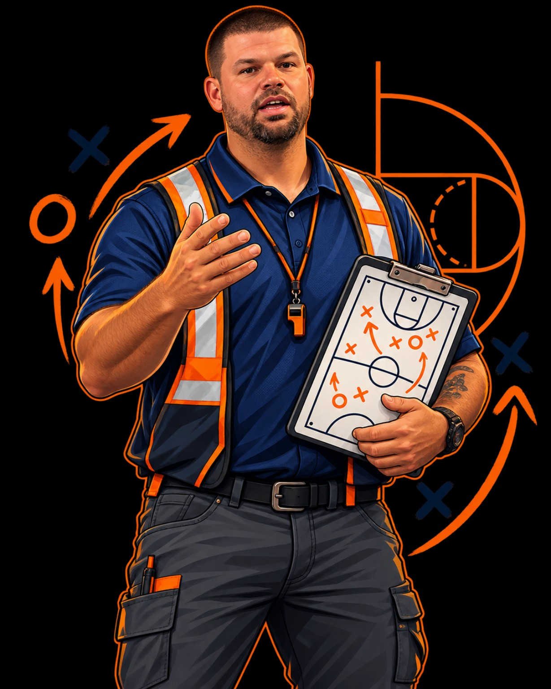

PRACTICAL TOOLS. REAL RESPONSIBILITY.
BUILD A
STRONGER
CREW.
You know how to show up for everyone else.
Who’s showing up for you?
Under the Hard Hat brings jobsite thinking to life beyond the job. Start with the support around you. Get clear on what’s missing. Make your next play.
Find your Starting Five Get to know the approach
You were never
supposed to play
all five positions.
Being dependable shouldn’t mean doing everything alone.
A good crew has different people doing different jobs. Your life needs that kind of support, too: someone who helps you find direction, say the hard thing, keep perspective, follow through and stay steady.
Under the Hard Hat is Eric Chapple’s home for practical leadership and everyday responsibility. The language is familiar. The questions are direct. The next step should be something you can actually do.
Less motivational noise.
More useful next moves.
FIVE POSITIONS. ONE HONEST LOOK.
WHO’S ON
YOUR TEAM?
Not your five favorite people.
Not a score of your abilities.
The people or activities that actually support you.
PGDirection
Who or what helps you see the big picture, find clarity and decide where you’re going?
SGCommunication
Who or what helps important messages get said, heard and understood?
SFBalance
Who or what helps you adjust, keep perspective and prevent one responsibility from swallowing everything else?
PFGrit & Accountability
Who gets into the hard things with you, tells you the truth and expects follow-through? What activity helps you keep showing up?
CStability
Who or what helps you get grounded and steady when things get chaotic?
Take it off the page.
Put it into practice.
The Starting Five experience goes beyond naming your team. It gives you a place to plan a small action, try it and return to what happened.
- 01
See your lineup.
Work through one question at a time. Name a person or activity, look at the evidence, or leave the position open.
- 02
Run one play.
Choose one useful action. Decide what you’ll try and what you’ll look for. Keep the play small enough to do.
- 03
Watch the film.
Come back to what happened. Notice what worked, learn from a miss and make the next adjustment.
YOUR NEXT PLAY STARTS HERE
A STRONGER TEAM.
A CLEARER NEXT STEP.
You don’t need a perfect lineup to get started.
You need an honest one.